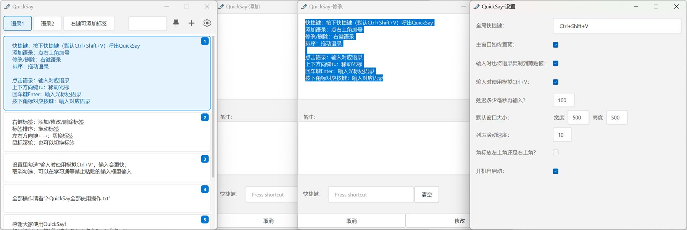
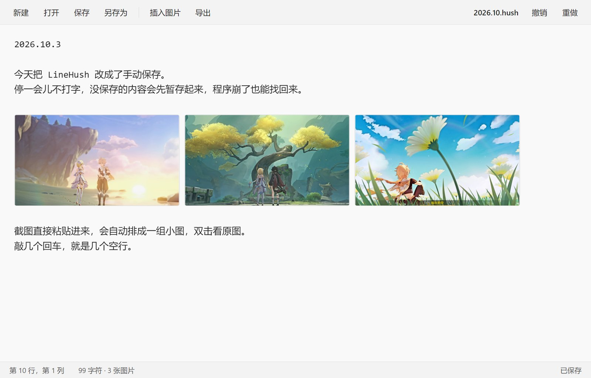

01桌面效率工具 · 持续维护
QuickSay
一款快捷短语软件
把常用的话、命令和 AI 提示词存进去，按 Ctrl+Shift+V 呼出，点一下就输入。支持分组、搜索、拖动排序和自定义快捷键。
最开始做它，只是为了方便发颜文字。后来发现，它可能是 Agent 时代最好用的 prompt 输入工具。
- GitHub Star
- 70
- 累计下载
- 850+
- 最新版本
- v2.0.1

你好，我是砍刀
Small tools, made with care.
我喜欢把每天遇到的小麻烦，写成能用的工具。快捷短语软件 QuickSay、日记编辑器 LineHush，还有一堆 AutoHotkey 脚本和 Agent Skills，都是这么来的。
中国 · 浙江湖州/湖州师范大学 · 2028 届
按住右 Alt 说话，
松开就打好字了。
点左上角的常用语试试▌
01 / ABOUT
More than a README.
从「这个能不能做？」
到「这个真的能用。」
我是强壮的砍刀，在湖州读大三。我喜欢把每天遇到的小麻烦写成工具：发颜文字太麻烦，就做了 QuickSay；找不到顺手的日记编辑器，就做了 LineHush；AI 给的链接老是打不开，就写了一个约束它联网搜索的 Skill。
现在几乎每天都和 Claude、Codex 一起写代码，晚上睡觉也让电脑开着让它接着跑。做出来的东西能帮到别人，是我最开心的事。
做多模态数据的标注和评测，比如给视频写描述。顺手把重复的活写成 Skill 和脚本，让自己和同事都省点时间。
在做多组学癌症亚型识别方向的论文和实验。手上还有一个比赛作品，比赛结束后开源。
QuickSay 的反馈每条都会回。最近主要在写 LineHush 和几个 Agent Skills。
02 / WORK
Made for myself, shared with everyone.
01桌面效率工具 · 持续维护
一款快捷短语软件
把常用的话、命令和 AI 提示词存进去，按 Ctrl+Shift+V 呼出，点一下就输入。支持分组、搜索、拖动排序和自定义快捷键。
最开始做它，只是为了方便发颜文字。后来发现，它可能是 Agent 时代最好用的 prompt 输入工具。

02日记编辑器 · 开发中
只有纯文本和图片的日记编辑器
想要苹果备忘录那样的体验：敲几个回车就是几个空行，插进来的图片自动排成小图。Obsidian 和 VS Code 都不太对味，就自己写了一个。

给 AI 定的工作方法，和给工具打的小补丁。
每天遇到的小麻烦，顺手写个脚本解决。
AutoHotkey-Scripts/
Other-Scripts/
用着不顺手，就改一改，再提回去。
03 / CONTACT
项目反馈、合作，或者随便聊聊都可以。